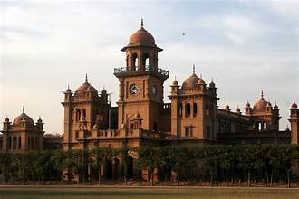

A historic educational institution in Peshawar, Khyber Pakhtunkhwa, known for its architecture and legacy.
Islamia College Peshawar was established in 1913 and is one of the oldest and most prestigious colleges in Khyber Pakhtunkhwa, Pakistan. The college has played a significant role in education, culture, and politics of the region. Its campus features stunning architecture blending Islamic, Mughal, and British colonial styles.
Over the years, Islamia College has produced numerous notable alumni and has become a landmark symbol of learning and heritage in Peshawar.
The college features an impressive blend of Islamic, Mughal, and Gothic architecture, with high arches, large domes, and spacious courtyards. The main building is constructed with red bricks, ornate facades, and intricate detailing that reflects the historical significance and cultural richness of the era.
